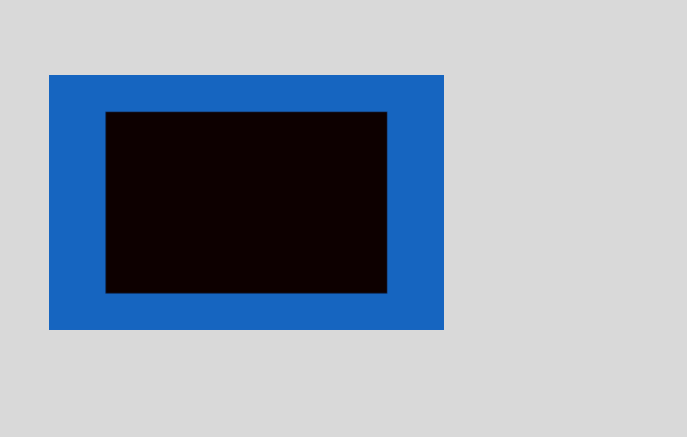
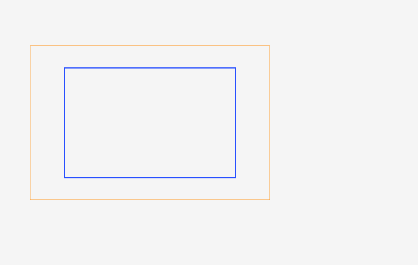

filter: url(#id) with feBlend multiply — 0.00% all categories ↑
FAIL 33.55% r2-filter-url-feblend-multiply · feblend-multiply · REALColorValueΔE 42.0



diff colours:MissingExtraColorErrGeomShiftAA edgeMatchAA / edge-jitter = cross-rasterizer measurement ceiling, not a bug.
why: fill recolour ΔRGB(+200,+0,+0) (ΔE 42.0)
SVG feBlend must composite primitive inputs: An inline SVG filter referenced from CSS contains a non-feColorMatrix primitive or unsupported matrix form. Catches wrong implementation: CSS filter:url() resolver extracts only a narrow feColorMatrix subset and skips the primitive.
regions (1)
| class | bbox (CSS px) | area% | magnitude | reason |
|---|---|---|---|---|
| ColorValue | 16,24 → 142,105 | 33.55 | ΔE 42.0 ΔRGB(200,0,0) | fill recolour ΔRGB(+200,+0,+0) (ΔE 42.0) |
source · cases/filters/r2-filter-url-feblend-multiply.html
1<!DOCTYPE html>
2<html lang="en">
3<head>
4<meta charset="utf-8">
5<title>r2 feblend-multiply</title>
6<style>
7 @page { size: 220px 140px; margin: 0; }
8 html { font-family: ParitySans; line-height: 1.5; }
9 * { margin: 0; box-sizing: border-box; }
10 html, body { background: #ffffff; }
11 svg.defs { position: absolute; width: 0; height: 0; overflow: hidden; }
12 .stage { width: 220px; height: 140px; padding: 36px 34px; background: #d9d9d9; }
13 .box { width: 90px; height: 58px; background: #d50000; filter: url(#r2f); }
14</style>
15</head>
16<body>
17 <svg class="defs" width="0" height="0" aria-hidden="true" focusable="false"><defs><filter id="r2f" x="-20%" y="-20%" width="140%" height="140%"><feFlood flood-color="#1565c0" result="blue"/><feBlend in="SourceGraphic" in2="blue" mode="multiply"/></filter></defs></svg>
18 <div class="stage"><div class="box"></div></div>
19</body>
20</html>